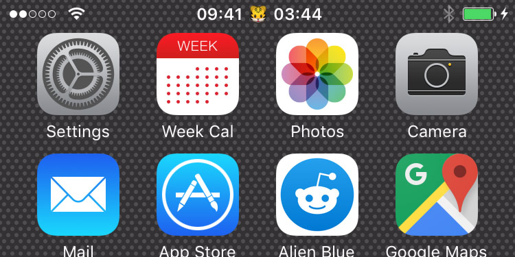

StatusBarTimer
See your timer everywhere
With StatusBarTimer you don't need to head back to the clock app to see the status of your timer. Instead, it's right next to the clock in your status bar. Now you can have a quick glance at it without interrupting what you're doing. And to top it off, it also works with the stopwatch.
Separator

You can choose any separator you want in Settings. The default is a vertical bar ( | ). Changes get applied instantly, no need for a respring.
Note
To save your batteries StatusBarTimer only updates the status bar once every second. This means that the time shown in the status bar might be unsynced with up to 1 second.